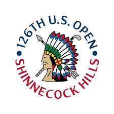

Live
Season
Archive
Draft
The 126th Championship
Locks of the Day Draft
Live

Shinnecock Hills Golf Club
Southampton, NY · June 18–21, 2026
Par
70
Yds
7,488
First Tee
6:45 AM
The 154th Open
Locks of the Day Draft
Live
Royal Birkdale
Southport, England · July 16–19, 2026
Par
70
Yds
7,223
First Tee
6:35 AM
Vol. 09
Majors Tracker
Locks
of the
Day
2026 Season
Live from the Field
The One Hundred Twenty-Sixth
United States
Open
Championship
June 18–21, 2026
Southampton, New York
Course
Shinnecock
Architect
W. Flynn
Par
70
Yardage
7,488
First Tee
Thu 6:45 AM
Network
NBC · USA
Loading…
Loading scores from ESPN…
Refresh
■ counting
·
italic
bench
·
missed cut
·
† penalty (worst made-cut +2)